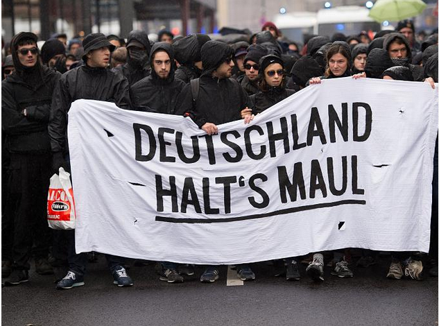

[01. Januar 2020] Die Antideutschen (meine persönliche Wahrnehmung)
Lina Luft says..
<< zurück zur Hauptseite
Zur Ideologie:
Von einer klassisch linken marxistischen Haltung her geht es um die Frage der Ausnutzung der Arbeiteris1. Der Hauptwiderspruch in der marxschen Theorie waren die Besitzverhältnisse an den Produktionsmitteln (wem gehören die Unternehmen?) im Kapitalismus. In den 70er Jahren entstand eine neue Strömung, die den Hauptwiderspruch in der Unterdrückung der Frau (Unterschiedliche Behandlung zwischen den Geschlechtern) sieht. Aus diesen Strömungen hervorgehend leitet sich die Ideologie der Antideutschen ab, die als den entscheidenden Faktor in der Geschichte die Vernichtung der Juden im 3. Reich sehen. Dies sei das größte Übel gewesen und der größte Interessenwiderspruch an dem alles weitere gemessen werden müsse.
Ein weiterer Ursprung ist in der antinationalen Bewegung zu finden, folgend der Logik: Das Übel in der Welt ist im Nationalismus begründet – deshalb sollte bei der eigenen Nation begonnen werden. Davon leitet sich der Name „Anitdeutsche“ ab. Gerade durch die Wiedervereinigung 1989 wurde ein Erstarken des deutschen Nationalstaates befürchtet, wodurch diese Strömung viel Zulauf erhielt.

Stop Kohle
Und schreibt gefällgst Briefe an alle Inhaftierten, die legitim für unser aller Leben aufgestanden sind! Aktionismus beginnt dort, wo wir uns nicht alleine lassen! Folter hinter Gittern ist unbekannt, aber das heißt nicht, dass sie nicht geschieht.
ABC Rhineland
<< zurück zur Hauptseite
Impressum >>